Preserving Balinese heritage through exquisite handcrafted architectural woodwork and master sculpting.
Gianyar, Bali, Indonesia
Phone: +62 81913436181
Email: aryaprnnn@gmail.com
© 2026 Soka's Wood Carving. All rights reserved. - Updated Version 1